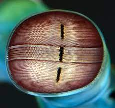
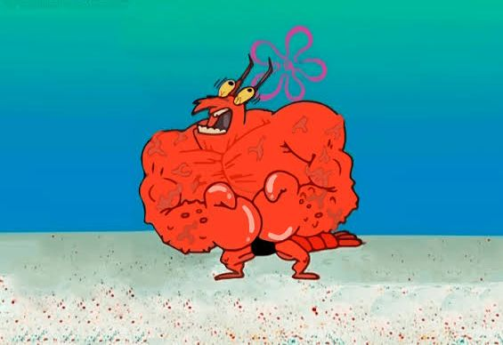
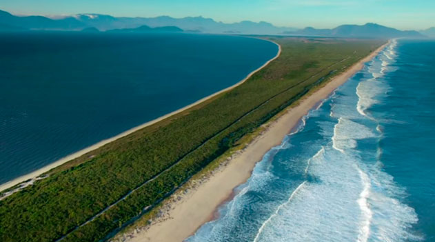

Fatos sobre o Stomatopoda
Generalidades
Odontodactylus scyllarus
- REINO: Animalia
- FILO: Arthropoda
- SUBFILO: Crustacea
- CLASSE: Malacostraca
- SUBCLASSE: Hoplocarida
- ORDEM: Stomatopoda
Visão
|  | Eles tem o sistema de visão de cores mais complexo do mundo animal, por terem pigmentos presentes na retina. Esses pigmentos são 12 cores primárias, cada uma em um pigmento. |
Ultra-SMASH
Esse carinha, também é conhecido como LAGOSTA-BOXEADORA, por ter o soco mais veloz e violento do reino animal, um um destaque para a velocidade: 80KM/H. |
 |
Localização
|  | Os Stomatopodas podem ser encontrados ao longo de quase todo litoral brasileiro, mas por serem animais furtivos e relativamente pequenos, são difíceis de serem observados. |